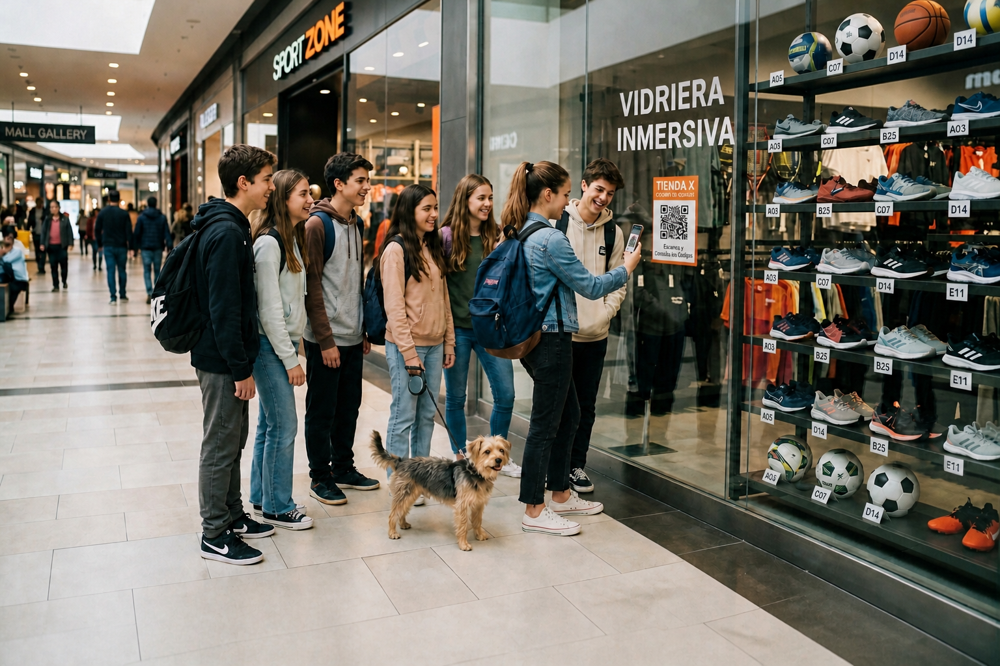
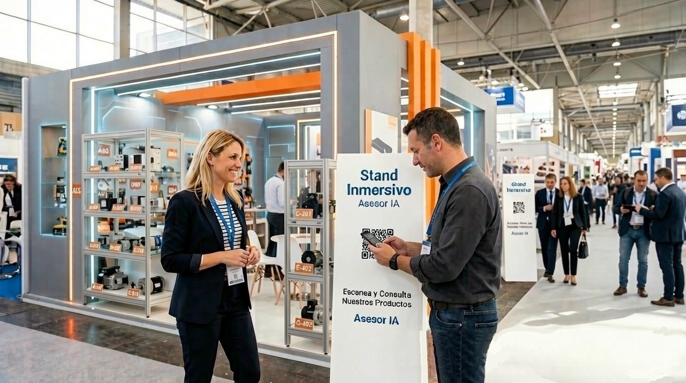

Bienvenido a QRPretium
-INMERSION DIGITAL DE TUS PRODUCTOS Y SERVICIOS / NIVEL UX-
Seleccioná el entorno al que querés ingresar para descubrir nuestra tecnología interactiva.

RETAIL / COMERCIOS
Ingresar a Vidrieras →
Catálogo interactivo para locales físicos. Tus clientes escanean el QR de la vidriera y acceden a precios, stock, fotos y un Asesor IA por voz.

FERIAS / EXPOSICIONES
Ingresar a Expositores →
Catálogo técnico para stands en ferias. Escaneo de QR para acceder a fichas técnicas, manuales, videos y un Asesor IA NEX.